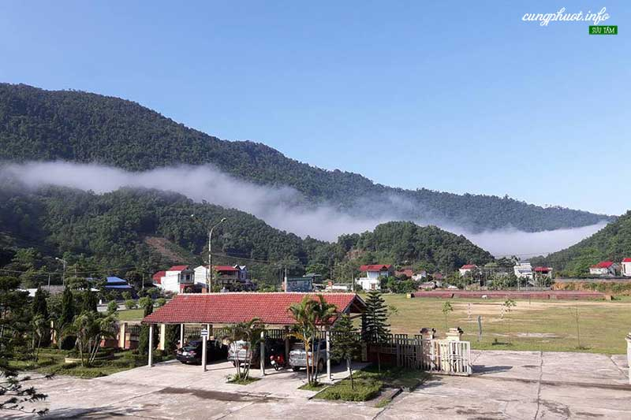
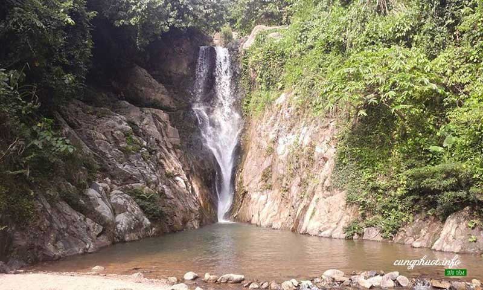
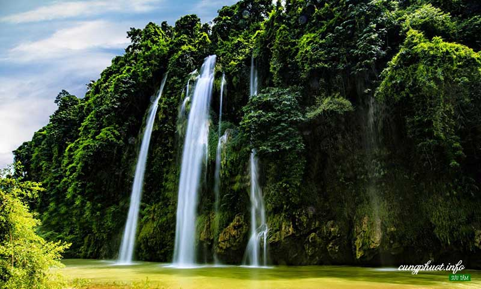
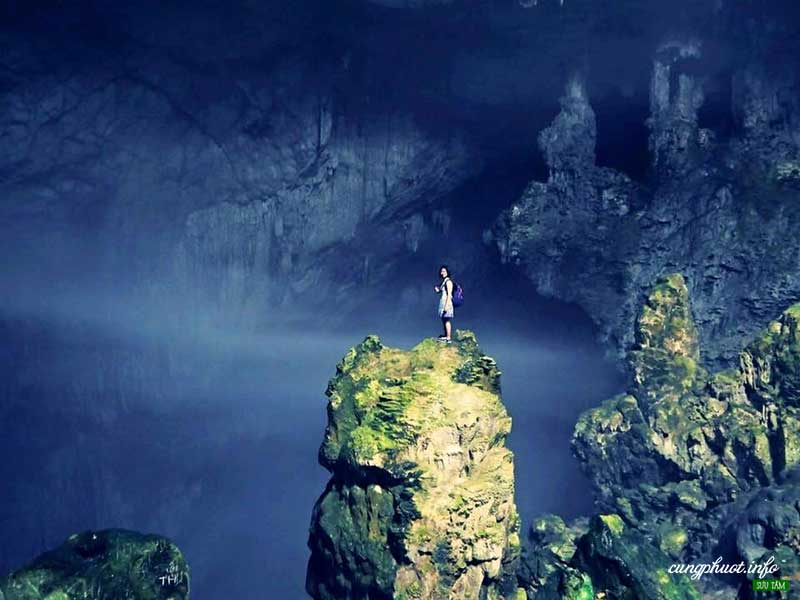
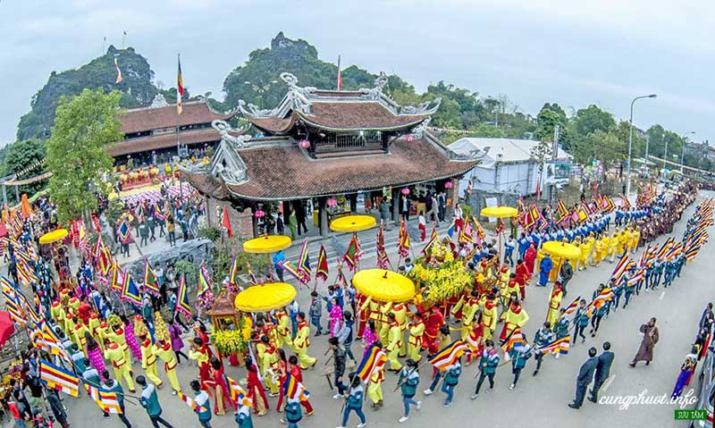
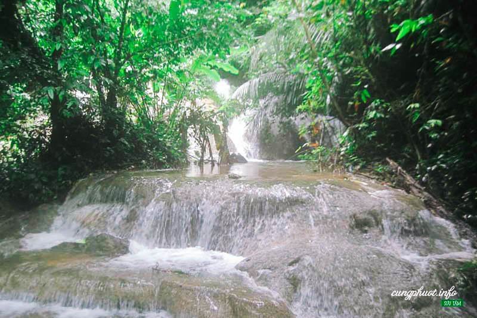
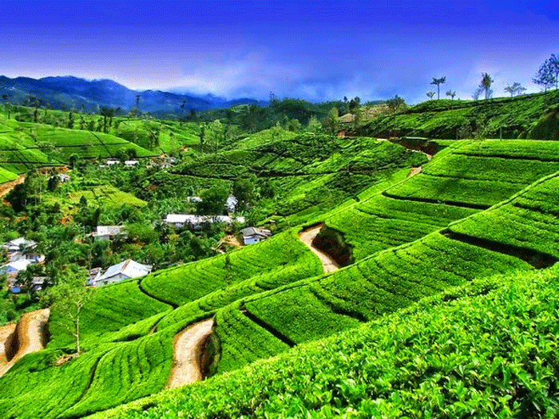

Các địa điểm du lịch ở Thái Nguyên
Thái Nguyên là một tỉnh miền núi trung du phía Bắc, tiếp giáp với Hà Nội và nổi tiếng với đặc sản chè ngon nổi tiếng khắp cả nước. Không chỉ có vậy, còn có rất nhiều địa điểm du lịch ở Thái Nguyên hấp dẫn mà các bạn không nên bỏ qua khi đi du lịch Thái Nguyên. Vùng đất này được thiên nhiên hào phóng ban tặng cho những thắng cảnh đẹp và hùng vĩ như Hồ Núi Cốc, suối Mỏ Gà, hang Phượng Hoàng…Thái Nguyên còn là vùng đất rất tuyệt vời để tổ chức những chuyến du lịch tìm hiểu văn hóa lịch sử bởi nơi đây có Khu di tịch lịch sử ATK Định Hóa, có Bảo tàng Văn hóa các dân tộc Việt Nam, nơi lưu giữ nhiều di sản văn hóa truyền thống của đại gia đình 54 dân tộc anh em.
Hồ Núi Cốc
Hồ ở phía nam huyện Đại Từ, cách trung tâm thành phố Thái Nguyên khoảng 15km về phía tây, là một thắng cảnh thiên nhiên gắn liền với câu chuyện tình huyền thoại về chàng Cốc nàng Công. Trong cái mênh mang của mây trời, sông nước; trong cái ngút ngàn mướt xanh của những vạt rừng in bóng mặt hồ; rồi 89 hòn đảo mang những cái tên thật khêu gợi: Đảo Tiên Nằm, đảo Núi Cái, đảo Cò, đảo Dê, đảo Khỉ… và xa xa phía tây, dãy Tam Đảo sừng sững như một bức trường thành lam sẫm… thật khó dùng lời để tả hết vẻ đẹp, sự quyến rũ của hồ Núi Cốc – hồ huyền thoại. Đến với hồ Núi Cốc là đến với một thắng cảnh “sơn thủy hữu tình”; đến với không khí trong lành, mát mẻ; để du ngoạn trên hồ và đắm mình trong câu chuyện tình chung thủy ngàn đời trở thành huyền thoại của vùng sơn cước. Hồ Núi Cốc nguyên là một đoạn của sông Công, một trong các chi lưu của sông Cầu chảy vòng quanh một ngọn núi đất có tên là núi Cốc. Đập Núi Cốc được khởi công xây dựng đầu năm 1972 nhưng do Không quân Mỹ mở chiến dịch Linebacker I đánh phá trở lại miền Bắc Việt Nam nên công trình bị đình hoãn đến đầu năm 1973 mới tái khởi động. Tháng 10 năm 1978, một trận lũ lịch sử trên sông Công có lưu lượng 3.000 mét khối/giây, gấp gần 4 lần lưu lượng xả thiết kế của cửa xả chính và làm vỡ hai vai đập. Công trình Đập Núi Cốc hoàn thành phần đầu mối vào năm 1979 và hoàn thành toàn bộ vào năm 1982.
Khu di tích ATK Định Hóa
An toàn khu Trung ương Định Hoá nằm ở trung tâm căn cứ địa Việt Bắc, nơi có địa thế hiểm trở “tiến có thể đánh, lui có thể giữ”, có đầy đủ yếu tố địa lợi, nhân hoà, đã trở thành địa bàn hoạt động an toàn của các cơ quan đầu não kháng chiến. Khu căn cứ này đặt tại huyện Định Hóa nằm ở cực bắc tỉnh Thái Nguyên.
Thác Khuôn Tát (Thác Bảy Tầng)
Thác Khuôn Tát người dân địa phương còn gọi là thác Bảy Tầng, thuộc xóm Tỉn Keo, xã Phú Đình. Thác ở không xa các di tích Tỉn Keo, đồi Phong Tướng, lán Khuôn Tát, nhà trưng bày ATK Định Hóa, nhà tưởng niệm Chủ tịch Hồ Chí Minh tại ATK Định Hóa. Nơi đầu nguồn suối Tỉn Keo, giữa đỉnh núi nhiều cây cổ thụ, một dòng nước ào ào đổ xuống các bậc đá tạo nên dòng thác bạc bảy tầng. Tầng thác dưới cùng khoảng 12m, đổ vào một vũng lớn, mỗi chiều gần 10m, sâu tới 2m, nước trong vắt tạo ra một nơi bơi lội lí tưởng. Ngay giữa chiều hè, chỉ cần vào cách chân thác chừng 50m, ta đã có cảm giác mát lạnh. Thác Khuôn Tát, khu vực đầu nguồn suối Tỉn Keo thật là nơi lý tưởng để du ngoạn, bơi lội, cắm trại, dã ngoại.
Thác Nặm Rứt
Thác Nặm Rứt trong tiếng Tày có nghĩa là thác Mưa Rơi. Thác ở cách trung tâm Tp Thái Nguyên khoảng 35km và nằm trên đường từ La Hiên (km 18 QL 1B) vào khu dích khảo cổ học Thần Sa. Vào mùa mưa, giữa vùng rừng núi non hùng vĩ, trên đỉnh một núi đá vôi có nhiều cây rừng, những dòng nước trắng xóa đổ xuống dòng sông Nghinh Tường tạo nên thác lớn. Vào mùa khô, nước chỉ đủ để ngấm qua những mảng rêu trên vách đá, rơi xuống dòng sông xanh tạo sự lấp lánh khắp
Hang Phượng Hoàng - Suối Mỏ Gà
Nằm bên trái QL 1B Thái Nguyên - Lạng Sơn (km 42) trên một núi đá lớn của dãy Phượng Hoàng thuộc xã Phú Thượng huyện Võ Nhai. Nằm ở độ cao khoảng 500m so với chân núi, Phượng Hoàng là một hang động casto rộng lớn với vẻ đẹp kỳ lạ. Trong hang không khí trong lành, mát rượi. Đáy hang có nước trong veo, lại có những bờ cát trắng mịn ven bờ nước. Trong lòng hàng, rất nhiều những nhũ đá được thiên nhiên tạo thành những cột chống trời, mẹ bồng con, vũ nữ, voi chầu… rất đẹp. Chính giữa lòng hang là khối nhũ đá khổng lồ hình chim phượng hoàng trong tư thế giương cánh oai hùng. Khối nhũ này cũng chính là duyên cớ để hang có tên là Phượng Hoàng và được thêu dệt nên câu chuyện cổ tích về mối tình chung thủy hóa đá của đôi chim Phượng Hoàng thủa xưa.
Chùa Hang
Chùa Hang nằm ngay trung tâm thị trấn Chùa Hang, Đồng Hỷ, cách trung tâm Tp Thái Nguyên khoảng 2km. hùa Hang còn được gọi là “Tiên Lữ Phật Động”, tên chữ là “Kim Sơn Tự”. Di tích thắng cảnh Chùa Hang có ba ngọn núi đá lớn, độc lập trên vùng đất bằng phẳng… Ngọn núi đứng giữa có tên là “Huyền Vũ” cao to vững trãi, hai bên là hai ngọn “Thanh Long - Bạch Hổ” vươn cao uy nghi, ba ngọn kết nối nhau bởi dải yên ngựa chừng 1000m có diện tích chân núi chừng 2,7ha.
Suối Tiên
Suối Tiên thuộc xóm Tân Lập II, xã Văn Lăng, huyện Đồng Hỷ, tỉnh Thái Nguyên; cách trung tâm thành phố Thái Nguyên khoảng 30km về phía bắc. Từ trung tâm thành phố Thái nguyên theo quốc lộ 1B đến km số 7 rẽ trái đường đi Hòa Bình, qua địa phận xã Hòa Bình đến xã Văn Lăng, suối cách trung tâm xã 2km (có biển chỉ dẫn). Trước đây suối có tên là Đát Khe Đậy nhưng sau này do khách du lịch đến đây ngày một nhiều, trước vẻ đẹp ngỡ ngàng, thiên tạo như vậy họ liên tưởng nơi đây có lẽ đã từng là điểm đến của các nàng tiên để du ngoạn và tắm mát nên đặt tên là Suối Tiên. Những người dân ở đây cũng không còn nhớ cái tên Suối Tiên này đã có từ lúc nào và dần đi vào tiềm thức của họ.
Đồi chè Tân Cương
Không chỉ được biết đến với đặc sản là loại chè đặc biệt thơm ngon, vùng đất Thái Nguyên còn nổi danh với đồi chè Tân Cương xanh bạt ngàn. Cũng chính bởi vẻ đẹp ngút ngàn đó mà những ai khi đặt chân đến đây đều không thể quên hương vị đặc trưng khó lẫn này. Thế nên, chẳng còn gì tuyệt hơn việc được đắm mình trong sắc xanh ấy. Đồi chè Tân Cương thuộc xã Tân Cương, cách trung tâm thành phố Thái Nguyên khoảng 10 km về phía tây nam. Đồi chè này nằm trong vựa chè rộng 1.300 ha. Khi mặt trời ló rạng, cả vùng đất xanh mát bừng lên sức sống.